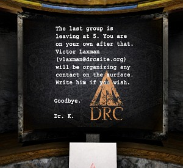

In 1997 the D’ni Restoration Council formed and the restoration of D’ni officially started. The DRC was making huge progress, but in 2004 the DRC lost funding and had to close the cavern.
Late 2006 the restoration continued with Cate Alexander funding the DRC. However, late 2007 Cate Alexander stopped funding the restoration, saying that she didn’t get sufficient returns on her investments.
All Myst, Riven and D’ni images and text © Cyan Worlds, Inc. All rights reserved.
No part may be copied or reproduced without express, written permission of Cyan Worlds, Inc.
Assets used with permission.